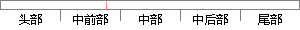

本Web APP使用Navicat作为数据库可视化管理工具。
片段位置图

相似结果|
1
原句片段：本Web APP使用Navicat作为数据库可视化管理工具。
相似片段 1：navicat 11 数据库管理工具破解版 立即下载 上传者: lan_xi 时间: 2017-12-25 综合评分: 0 积分/C币:8 使用Jenkins启动maven作为项目构建管理工具的web项目...
相似片段 2：2016.08.02 16:13 打开App 首先文章声明转载来自...因为个人感觉Navicat对于开发web的开发者来说还是蛮...Navicat是一款数据库管理工具, 用于简化, 开发和管理...
|
※ 片段修改建议 ※
近似词参考：- 使用：利用
系统自动生成语句：本Web APP利用Navicat作为数据库可视化管理工具。
注：本片段修改建议为系统自动生成，仅供参考。